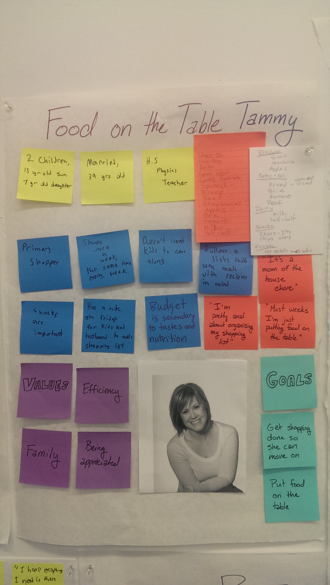
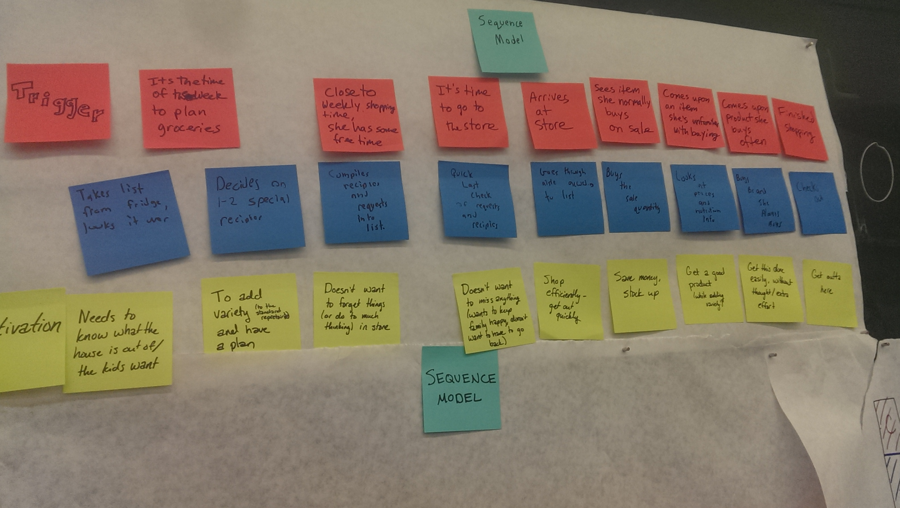
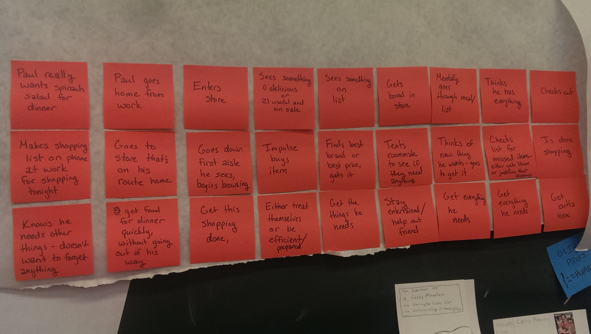
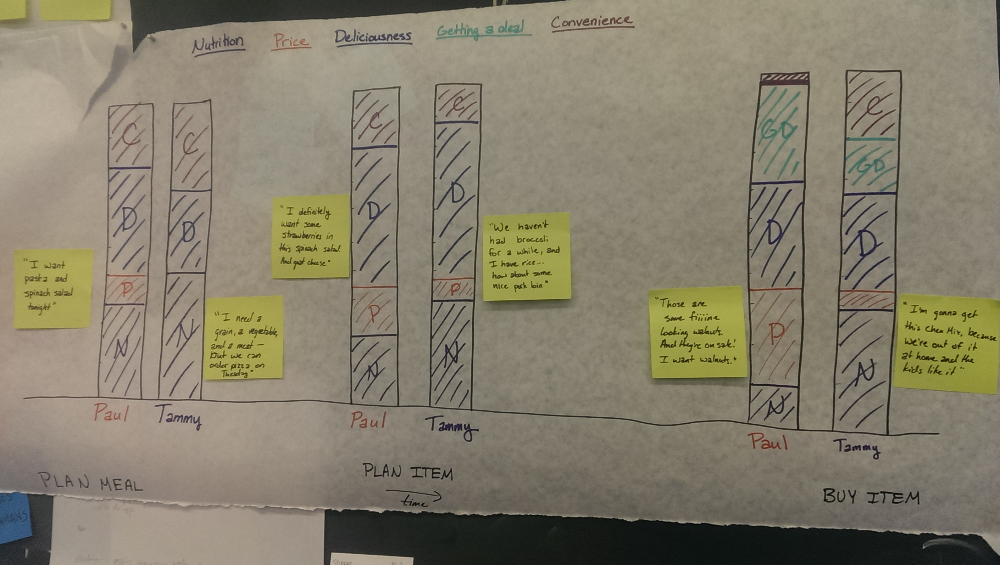

Project Brief
September 28, 2014
Problem Description
People like to save money and will buy groceries that are on sale. But most people will not use coupons because they are painful to find, clip, and use. Coupons are a great source for savings, yet require too much effort most days. How can we make using coupons easier for our users?
Personas
We created two personas that represent our users. Both personas keep deals in mind while shopping, but have different overall goals for grocery shopping.
Partially Planned Paul

Paul is 22 and he shops only for himself. He goes into the store with a vague plan for a meal, but tends to organize the details of his shopping while in the store. He pays attention to different deals he sees in a store and uses them to his advantage, but isn’t organized enough to use coupons effectively. He considers price while he shops, but doesn’t rigorously keep track of budget. However, he does consciously try to spend less on groceries as he shops.
Food on the Table Tammy
Tammy shops for her family and wants to accomplish this chore quickly and efficiently so that she can get home to be with her family. She uses a grocery list and is very focused with her shopping. She values taste and brand reputation over budget while shopping but appreciates a good deal. She doesn’t have time to use coupons in order to save more.
Scenarios
The following two scenarios we have describe how our personas go through the shopping experience. It shows the motivations, and inspirations, for the decisions they would make. It’s important to note how both personas use sales to shop opportunistically, but do not bring coupons to the store.
 Motivations
The poster describes what motivates our personas in each part of the process. The process here is broken into “Plan meal” which includes finding recipes and formulating meals, “plan item” which includes choosing what specific foods will go into each meal (Tammy does this at home, but Paul does this in the store), and “buy item” which is the process of choosing the actual item off the shelf in the store. The main motivations we thought about are nutrition, price, deliciousness, getting a deal, and convenience.
Solutions Outline
We plan to make an app that will find coupons that are relevant to you based on your current shopping list, and may suggest alternative purchases based on savings. We hope to make coupon usage effortless.

Impact
This app should allow our users to save money while using minimum effort. They will be able to take advantage of several coupons that they would not have known about otherwise.